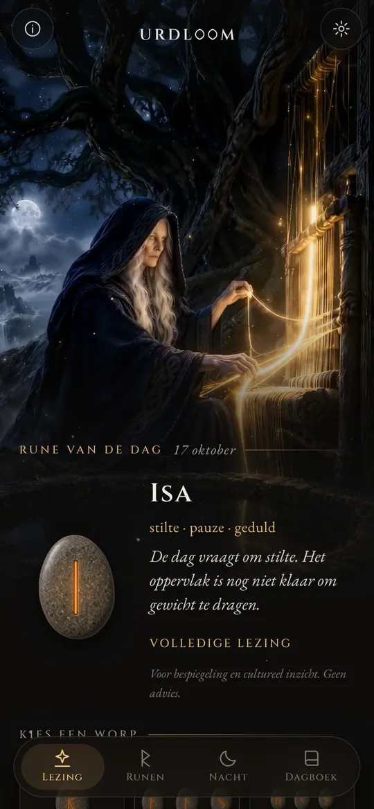
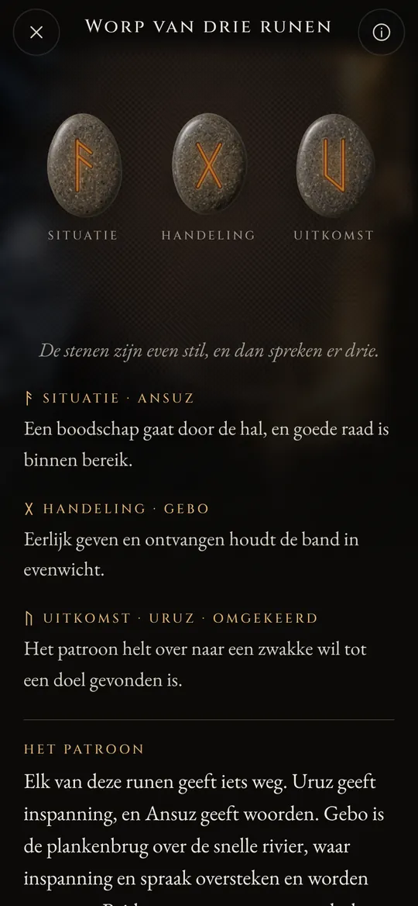
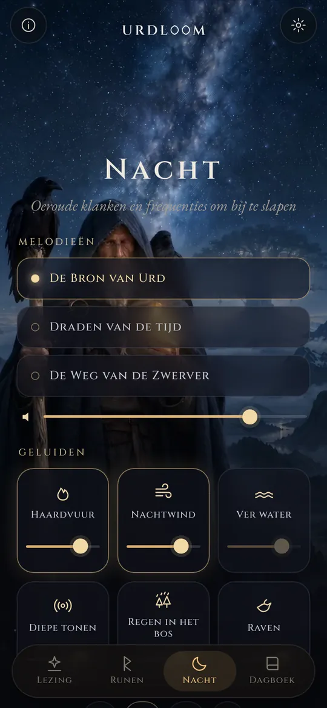
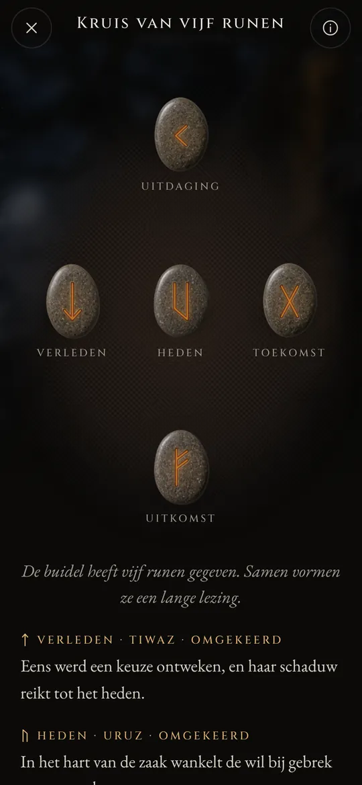

Runenlezingen uit de bron van het lot.
Werp het Elder Futhark, lees wat valt in de stem van de oude gedichten en laat je door de nachtklanken de slaap in dragen.
Drie vrouwen zitten bij een bron
In de oude Noordse gedichten zitten drie Nornen bij een bron onder Yggdrasil, de wereldboom. Ze begieten zijn wortels, kerven staven en leggen het leven vast van ieder die geboren wordt. De oudste is Urd. Haar naam betekent wat geschied is, en de bron is naar haar genoemd.
Urdloom dankt zijn naam aan haar, en aan het weefgetouw waarop het lot geweven zou worden. De app bewaart die sfeer: een buidel stenen in je hand, een kleed op de grond en lezingen in de stem van de sagen, niet in die van een horoscoop.

Vandaar komen maagden, veel wetend, drie uit het meer onder de boom.Völuspá, strofe 20
Vasthouden, schudden, loslaten
Houd de buidel vast en de stenen rammelen in je hand. Laat los en ze vliegen op het kleed, rollen, komen tot rust en draaien een voor een om. De lezing verschijnt eronder.

Enkele rune
Eén steen voor de dag die voor je ligt, of voor een vraag die met ja of nee te beantwoorden is. Tik en hij is geworpen.


Worp van drie runen
Situatie, handeling, uitkomst. Lees ze van links naar rechts als een korte saga, en daarna als één geheel: een slotdraad laat zien hoe de drie met elkaar spreken.

Kruis van vijf runen
Verleden, heden en toekomst door het midden, de uitdaging erboven en de uitkomst eronder, en jij in het hart ervan.




Elke lezing is met de hand geschreven: de vierentwintig runen, elk paar en alle 2.024 combinaties van drie, in elk van de tweeëntwintig talen. Er wordt niets gegenereerd terwijl je wacht.

De vierentwintig runen
Het Elder Futhark is het oudste runenalfabet, gekerfd van ongeveer de tweede tot de achtste eeuw. De vierentwintig tekens vallen uiteen in drie families van acht, de ætts, elk genoemd naar de god wiens rune vooraan staat. Raak een steen aan om hem te lezen.
De ætt van Freyr
De ætt van Hagal
De ætt van Tyr
De runennamen blijven in elke taal in hun oude vorm. Het zijn de namen van de tekens zelf, door geleerden gereconstrueerd uit de runengedichten en de oudste alfabetten.
Een korte geschiedenis van de runen
Runen zijn in de eerste plaats letters. Germaanse volken kerfden ze zo'n vijftienhonderd jaar lang in hout, been, metaal en steen. Zo zijn de tekens en het oude werpen van het lot tot ons gekomen.

Loten op een wit kleed
De Romeinse geschiedschrijver Tacitus schrijft dat de Germanen een tak van een vruchtboom in stukjes snijden, die met tekens merken en ze over een wit kleed uitstrooien. Een priester of het hoofd van het huis raapt er drie op, een voor een, en leest ze. Hij zegt niet dat de tekens runen waren, maar het gebaar is hetzelfde dat Urdloom bewaart.
De eerste inscripties
Een benen kam uit het veen van Vimose in Denemarken draagt een van de oudst bekende runeninscripties, één enkel woord: harja. Speerpunten, mantelspelden en amuletten uit dezelfde eeuwen laten zien dat het schrift zich toen al over het noorden had verspreid.
De hele rij op één steen
Op de Kylversteen van Gotland kerfde iemand alle vierentwintig tekens in hun volgorde, het oudste volledige futhark dat we hebben. De rij is genoemd naar haar eerste zes letters: f, u, th, a, r, k.
De gouden hoorns
Een van de twee gouden hoorns van Gallehus in Denemarken draagt een stafrijmende versregel: Ik, Hlewagastiz, zoon van Holt, maakte de hoorn. Het is een van de vroegste dichtregels in welke Germaanse taal dan ook.
Zestien tekens voor de vikingtijd
In Scandinavië wordt het alfabet teruggebracht tot zestien tekens, het Jongere Futhark. Duizenden gedenkstenen worden in zijn letters opgericht, waaronder de grote stenen van Jelling in Denemarken.
De gedichten worden opgeschreven
IJslandse schrijvers leggen de Eddische gedichten vast. In de Völuspá zitten de Nornen bij de bron van Urd; in de Hávamál hangt Odin negen nachten aan de door wind geteisterde boom en neemt hij met een kreet de runen op.
Een vers voor elke rune
Runengedichten uit Noorwegen en IJsland, samen met een ouder Angelsaksisch gedicht, geven elke rune een kort vers: vee brengt twist onder verwanten, hagel is het koudste graan, ijs is zeer glad. Veel van wat we over de betekenissen van de runen weten, komt uit deze verzen.
Opnieuw lezen
De runen gebruiken om bij stil te staan is een moderne herleving, gebouwd op die gedichten en op de beelden uit de Edda's. Urdloom staat openlijk in die traditie: het doet zich niet voor als een oud orakel, het wil alleen de oude tekens met zorg lezen.

Oeroude klanken en frequenties om bij te slapen
Als de dag voorbij is, komt de zwerver naar buiten onder de sterren. Kies een melodie, leg er klanken overheen en zet een timer. De klanken spelen door met het scherm uit en sterven vanzelf weg.
Drie melodieën: De Bron van Urd, Draden van de tijd en De Weg van de Zwerver, gebouwd op keelzang, lijsttrom en gestreken tagelharpa.
Zes lagen om te mengen, elk met een eigen volume: haardvuur, nachtwind, ver water, diepe tonen, regen in het bos en raven.
Elke klank is voor Urdloom gemaakt. Er wordt niets van internet afgespeeld.
Kleine dingen die ertoe doen
- Elke ochtend een rune
- Op het eerste scherm wacht één steen met de beeldzijde naar beneden. Als je wilt, vertelt een kort berichtje je elke ochtend welke rune er voor je getrokken is.
- Een dagboek
- Bewaar de lezingen die je aanspreken, samen met de vraag die je stelde.
- Lezingen om te delen
- Stuur een lezing als afbeelding: de stenen zoals ze vielen en de woorden eronder.
- Tweeëntwintig talen
- Elke taal geschreven en nagelezen door mensen die haar lezen, met een lettertype en grootte die je zelf kunt kiezen.
Wat hier gebeurt, blijft hier
Urdloom werkt zonder internet. Er is geen account, geen aanmelding en geen reclame, en de app bevat geen enkele vorm van analyse of tracking. Je vragen, lezingen en dagboek blijven op je telefoon.
PrivacyVragen
Voorspelt Urdloom de toekomst?
Nee. De lezingen zijn bedoeld voor bezinning en culturele interesse. Ze wijzen, zoals de oude runen deden, en de betekenis krijgt vorm in je eigen leven. Niets in de app is medisch, financieel, juridisch of ander professioneel advies.
Waarom klinkt de taal oud?
De runen komen uit een wereld van gedichten, sagen en raadsels. We hebben de lezingen bewust in die stem geschreven en ze in elke taal zo dicht mogelijk bij de runentraditie gehouden.
Heb ik een internetverbinding nodig?
Nee. Alles, van de lezingen tot de nachtklanken, zit in de app zelf.
Welke talen zijn er?
Engels, Turks, Duits, Frans, Spaans, Italiaans, Portugees, Russisch, Oekraïens, Pools, Nederlands, Zweeds, Noors, Fins, Grieks, Arabisch, Hindi, Indonesisch, Japans, Koreaans, Chinees en Albanees.
Schrijf ons
Vragen, een woord dat in jouw taal verkeerd klinkt, of een lezing die je is bijgebleven: we lezen elk bericht.
support@urdloom.com